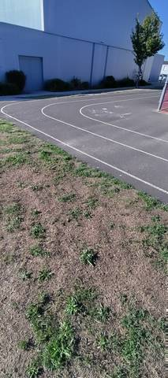
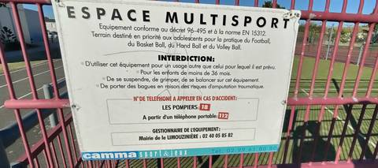

{kind=link}
{kind=link}
Je ne dirais pas que c'est une piste d'athlétisme : les coins sont presque carrés, ce n'est pas vraiment exploitable. C'est bon pour des enfants qui veulent faire des courses entre eux, et encore — même pour enseigner l'athlétisme à des enfants, ce n'est pas sérieux. Il n'y a aucun agrès, ni sautoir ni aire de lancer. Si je pouvais mettre zéro, je mettrais zéro.
Complexe Sportif
Rue du Stade, 44310 La Limouzinière · Loire-Atlantique
Complexe Sportif is an athletics venue in La Limouzinière (Loire-Atlantique), Pays de la Loire, France. It has an asphalt / tarmac running track with 2 lanes. The ministry's register classes it as a standalone track: it is not part of an athletics stadium, and its lap length is stated nowhere. Access is free and unrestricted.
Photos


A photo is surely still missing
Jump pits and throwing areas are what public data describes worst, and what gets photographed least. A close-up of the ground, a covered vault pit, a sand box gone to weeds: each adds what no field carries.
Send a photoNo GitHub account?Track
- Surface
- Asphalt / tarmac
- Track type
- Standalone track
- Lanes
- 2
- Setting
- Outdoor
- Opened
- 2010
Access & amenities
- Free access
- Yes
- Floodlighting
- No
- Changing rooms
- No
- Showers
- No
- Toilets
- No
Visite du 3 septembre 2026, vers 18 h 20 : la piste a été foulée, rien n'en interdit ni n'en ferme l'accès, et l'accès libre déclaré par le recensement du ministère est confirmé sur place. Aucun panneau d'horaires ni de créneaux réservés n'a été vu pour la piste elle-même. Le seul panneau du site est celui du city-stade voisin, fixé sur son grillage : « ESPACE MULTISPORT — Équipement conforme au décret 96-495 et à la norme EN 15312. Terrain destiné en priorité aux adolescents pour la pratique du Football, du Basket Ball, du Hand Ball et du Volley Ball. » Il liste des interdictions (usage autre que celui prévu, enfants de moins de 36 mois, se suspendre ou grimper, porter des bagues), les numéros d'urgence, et donne le gestionnaire : Mairie de La Limouzinière, 02 40 05 85 82. Il ne dit rien des horaires, et rien de la piste.
Athlete reviews
Ce n'est pas une piste d'athlétisme utilisable, et c'est le point principal que cette visite ajoute au recensement. Le tracé existe bien — enrobé sombre, lignes blanches peintes, deux couloirs — mais ses angles sont presque carrés : ce ne sont pas des virages sur lesquels on peut courir vite, il faut casser sa foulée à chaque changement de direction. Les deux couloirs ont été comptés sur place, le 3 septembre 2026. La photo du virage montre quatre lignes blanches ; seules deux d'entre elles délimitent des couloirs, les autres bornent la piste. C'est le comptage de la visite qui fait foi ici, pas la lecture de l'image. Le revêtement est du bitume, foulé sur place et non déduit d'une couleur vue du ciel. Le recensement du ministère le déclarait déjà : la visite le confirme. Aucun agrès n'a été vu le 3 septembre 2026 : ni sautoir en longueur, en hauteur ou à la perche, ni aire de lancer, ni rivière de steeple. Le champ « agrès » reste donc vide. Le développement n'a pas été mesuré et reste inconnu. OpenStreetMap ne trace pas cette boucle — on y trouve les terrains voisins (football en herbe, football en stabilisé, tennis, boules, une piste de BMX en terre) et le city-stade en tartan, way/433356668, mais pas la piste. Rien ne permet donc d'en donner ne serait-ce qu'une estimation : c'est à mesurer au décamètre en couloir 1, à 30 cm de la corde, lors d'une prochaine visite. La piste borde le Complexe sportif Limouzin (OpenStreetMap, way/72237562), dont le bâtiment abrite le basket et un club de tir, et elle passe le long du city-stade — c'est ce dernier que couvre le panneau « Espace Multisport » du site, pas la piste.
Other venues in the department
- Espace Yannick Noah
- Complexe sportif des Grenais
- Stade Muriel Hurtis — Complexe des Chevrets
- Complexe Sportif
- Stade Municipal
- Complexe Sportif Hugues Martin
Report an error or complete this record
Réf. I440830003 · Source: Data ES + community — Data ES, French ministry for sport, Licence Ouverte 2.0. Records are self-declared and may be incomplete: check access conditions before travelling.